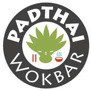
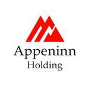
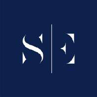
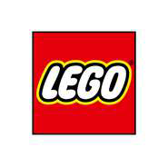

1. szint
Örökbefogadók
Vállalatok és magántámogatók egy-egy kórházi osztály vagy intézmény működéséhez járulnak hozzá. Azáltal, hogy fedezik az adott kórházban végzett tevékenységünk működési költségeit, kiszámítható és hosszú távú jelenlétet biztosíthatunk az érintett osztályokon.
Örökbefogadnék egy osztályt →
Kórház / osztályÖrökbefogadó
Gottsegen György Országos Kardiovaszkuláris Intézet
PadThai Wokbar
Magyarországi Református Egyház Bethesda Gyermekkórháza
Appeninn Holding
Bethesda Gyermekkórház – Ilka utcai részleg és Semmelweis Egyetem I. sz. Gyermekgyógyászati Klinika
Sárospataki Albert
Debreceni Egyetem Klinikai Központ Gyermekgyógyászati Klinika
Special Effects
Debreceni Egyetem Gyermekgyógyászati Klinika és Borsod-Abaúj-Zemplén Vármegyei Központi Kórház
LEGO
Semmelweis Egyetem Gyermekgyógyászati Klinika – Tűzoltó utcai részleg
Klaudia és Tamás
Dél-pesti Centrumkórház – Országos Hematológiai és Infektológiai Intézet
Indotek Group
Markusovszky Egyetemi Oktatókórház
Tuxera